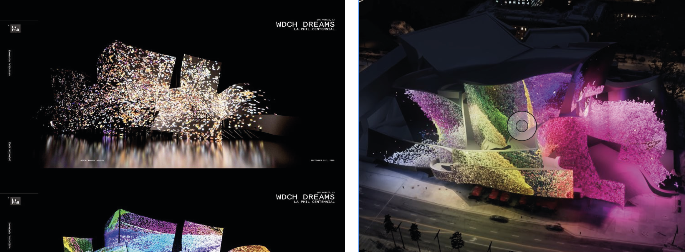
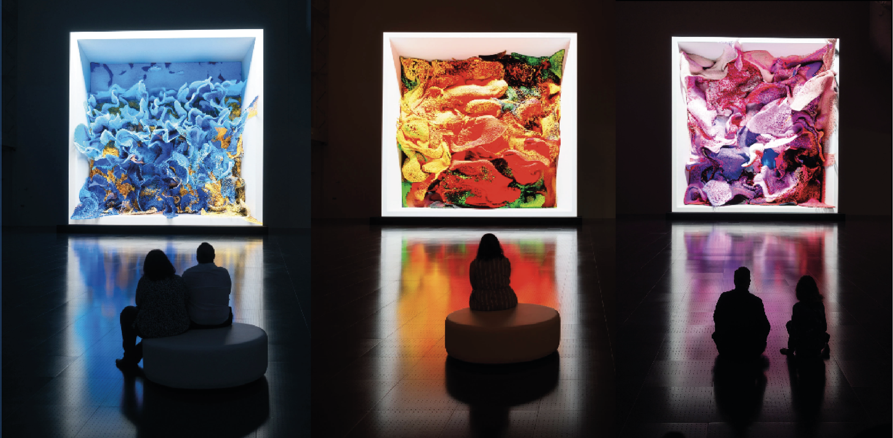
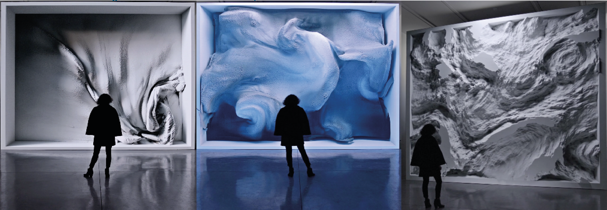
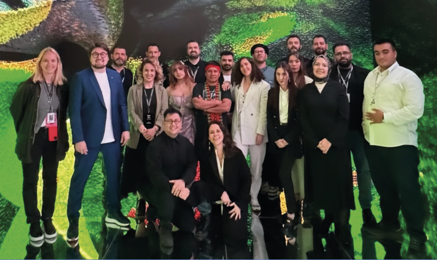

Refik Anadol: Quand les données et l’intelligence artificielle redéfinissent l’art numérique.
Biographie

Refik Anadol, né à Istanbul en 1985, diplomé de l’Université de Bilgi en Turquie et de l’Université de californie à Los Angeles (UCLA) comme Casey Reas qui est un artiste numérique et co-créateur est un artiste turc qui a développé une pratique qui combine art, technologie et science. Il est reconnu pour ses explorations de l’art numérique. Installé à Los Angeles, il se distingue par son approche unique qui intègre intelligence artificielle (IA), science des données et architecture. Anadol dépasse les frontières de l’art traditionnel en s’appuyant sur des outils technologiques pour créer des installations visuelles immersives et spéctaculaire. Ses œuvres, de “WDCH Dreams“ à “Machine Hallucinations“, explorent l’interaction entre l’abstraction des données et notre réalité visuelle, en utilisant des algorithmes pour donner forme à des “hallucinations” numériques.
Un processus créatif qui repose sur les données
Du peu que l’on sait sur le processus créatif d’Anadol, souvent les données deviennent un matériau artistique. Comme pour Christian Boltanski, il travail avec des archives, il collecte des ensembles de données variés, que ce soit des images d’archives, des données climatiques, ou même des photographies de paysages naturels. Par exemple, pour “WDCH Dreams“, il a collaboré avec le Los Angeles Philharmonic en utilisant des archives visuelles et sonores, transformées ensuite en projections animées sur le célèbre Walt Disney Concert Hall. Grâce à des algorithmes de machine learning, ces données visuelles et sonores ont donné naissance à une œuvre qui s’anime et raconte visuellement l’histoire de cette institution.

L’intelligence artificielle au service de l’Art?
Pour transformer ces données en œuvres immersives, Anadol utilise des réseaux génératifs adversaires (GAN), qui permettent de créer des visuels fluides, presque organiques. Dans “Machine Hallucinations“ qu’il a débuté en 2016, des millions d’images d’éléments naturels et urbains sont retravaillées en une suite de paysages abstraits, toujours en évolution, qui semblent “halluciner” sous nos yeux. Ce procédé d’“hallucination” rappelle le fonctionnement de la mémoire humaine en générant des images oniriques, mais artificielles.

Une réflexion sur la mémoire et les émotions
Dans “Melting Memories“, c’est l’une des rares fois où l’on en sait un peu plus sur son pocédé artistique. Anadol va pour une fois au-delà de la simple esthétique en explorant la relation entre mémoire humaine et technologie. Il a collaboré avec des neuroscientifiques pour capter des ondes cérébrales, traduisant ensuite ces données en visuels. Cette création évoque des souvenirs qui se dissolvent, une métaphore inspirée de l’expérience personnelle de l’artiste, dont un proche souffrait de la maladie d’Alzheimer. Ce projet incarne la manière dont Anadol utilise l’IA non seulement comme un outil technique, mais aussi comme un vecteur d’émotions et d’histoires humaines. On remarque aussi dans cette oeuvres que la majorité de son travail est partagé/conçue avec toute une équipe. Dans ce cas justement il a collaboré avec un designer son nommé Kerim Karaoglu, un designer software nommé Steffen Klaue et d’autre membres de son studio comme Efsun Erkilic, Ho Man Leung, Kian Khiaban, Raman K. Mustafa, Toby Heinemann. Mais également avec des collaborateurs scientifique tels que Adam Gazzaley, M.D., Ph.D., David A. Ziegler, Ph.D., Ucs / Neuroscape Lab Members.

Un travail collaboratif au sein de Refik Anadol Studio
Pour réaliser ses œuvres, Refik Anadol Studio (RAS) fonctionne comme une plateforme multidisciplinaire où chaque collaborateur apporte une expertise spécifique pour donner vie aux projets. Parmi les contributeurs clés, Cansu Canca, experte en éthique de l’IA, joue un rôle crucial en veillant à l’utilisation responsable des données. Elle aide à définir les limites éthiques de l’usage des algorithmes dans les projets d’Anadol, garantissant un équilibre entre innovation technologique et respect des droits humains. Ali Taptik, photographe et artiste visuel, contribue à certains projets par son expertise en traitement d’images et sa compréhension des archives visuelles. Son rôle est essentiel dans la sélection et la contextualisation des images utilisées dans les installations. Pinar Yoldas, artiste et chercheuse spécialisée en bioart, collabore également avec Anadol sur des projets qui croisent art et biologie. Elle apporte une perspective unique sur la manière dont les données biologiques peuvent être transformées en œuvres visuelles. Enfin, Maurizio Martinucci, alias TeZ, un designer sonore et visuel spécialisé dans les environnements immersifs, collabore sur la création d’expériences auditives et visuelles synchronisées. Il aide à concevoir les interactions sensorielles entre les sons et les projections numériques, renforçant l’aspect multisensoriel des œuvres du studio. Il travail avec environs une trentaines de collaborateurs au sain de son studio. Ces collaborations permettent de renforcer la dimension immersive et multisensorielle des œuvres d’Anadol.

Une vision esthétique qui marie Art, Science et Technologie
Anadol offre une vision unique et surtout spéctaculaire où l’IA devient un medium artistique et narratif. À travers des installations visuelles qui transforment la matière numérique en paysages abstraits, il ouvre de nouvelles perspectives sur la mémoire et l’émotion dans un monde digitalisé. On peut dire qu’Anadol et son équipe réalisent des créations qui transcendent l’art traditionnel, faisant de la technologie un pont entre les émotions humaines et les possibilités infinies de l’intelligence artificielle, mais à quelle prix? Et si ils se perdaient eux même dans leurs processus créatifs et qu’ils finissaient par créer des oeuvres assez ressamblant avec une technique presque machinal qui fait justement oublier la dimensions humaines de cette relations.
Une nouvelle frontière entre Art et Technologie?
En conclusions les œuvres du studio RAS, qui mêlent mémoire humaine et mémoire machine, nous plongent dans des expériences esthétiques captivantes avec un penchant pour le spectacle, mais mise à part nous questionner sur notre relation à l’IA et aux données tels que les archives, Anadol ne réinvente pas forcement notre façon de percevoir le monde numérique. Il propose juste une vision fascinante de l’avenir de l’Art, en utilisant l’IA et en se penchant un peu sur les NFT, exepté cela il n’y a pas de pensé révolutionnaire, ni d’explications sur sa manière de travaillé ou son processus artistique, ce qui nous aurait permis de comprendre plus ses projet monumental plutôt que rester sur cet notion de beauté. Malheureusement ces projet commence à devenir répetitifs et sans âmes car elles se restreind à un programmes continue où des taches son donné à chacuns de ces collaborateurs qui en font grâce à l’IA et de la programmations une oeuvres immense et immersive grâce au travail du son et du mouvements des“données DATA”.
Bibliographie:
Définitions:
Données DATA
La data est un terme anglais utilisé dans le secteur des télécommunications pour qualifier les données qui peuvent circuler par un réseau téléphonique ou un réseau informatique, hormis les données vocales.
Exemple : On vous a installé un réseau informatique qui permettra un grand échange de data.
Hallucinations: Perception d'un objet non réel. Il faut distinguer l'hallucination de l'illusion (perception déformée d'un objet réel), de l'interprétation délirante (interprétation fausse d'une perception exacte) et de l'hallucinose (le sujet sait, d'emblée, que sa perception hallucinatoire est sans objet). Les hallucinations peuvent être sensorielles ou psychiques.
Intelligence Artificielle (IA): Ensemble de théories et de techniques mises en œuvre en vue de réaliser des machines capables de simuler l'intelligence humaine. Avec l'intelligence artificielle, l'homme côtoie un de ses rêves prométhéens les plus ambitieux : fabriquer des machines dotées d'un « esprit » semblable au sien. Pour John MacCarthy, l'un des créateurs de ce concept, « toute activité intellectuelle peut être décrite avec suffisamment de précision pour être simulée par une machine ». Tel est le pari – au demeurant très controversé au sein même de la discipline – de ces chercheurs à la croisée de l'informatique, de l'électronique et des sciences cognitives. Malgré les débats fondamentaux qu'elle suscite, l'intelligence artificielle a produit nombre de réalisations spectaculaires, par exemple dans les domaines de la reconnaissance des formes ou de la voix, de l'aide à la décision ou de la robotique.
La maladie d'Alzheimer: La maladie d'Alzheimer se traduit par des troubles de la mémoire, de l'exécution de gestes simples de la vie courante, de l'expression orale ou écrite, de l'orientation dans le temps et l'espace. C'est la maladie neurodégénérative la plus fréquente. Elle survient le plus souvent après 65 ans.
Machine learning: L'apprentissage automatique (machine learning en anglais) est un champ d'étude de l'intelligence artificielle qui vise à donner aux machines la capacité d'« apprendre » à partir de données, via des modèles mathématiques.
NFT: Un NFT (de l'anglais non-fungible token) ou jeton non fongible (JNF) est un objet informatique (un jeton) suivi, stocké et authentifié grâce à un protocole de blockchains, auquel est rattaché un identifiant numérique, ce qui le rend unique et non fongible.
réseaux génératifs adversaires (GAN): En intelligence artificielle, les réseaux antagonistes génératifs (RAG) parfois aussi appelés réseaux adverses génératifs (en anglais generative adversarial networks ou GANs) sont une classe d'algorithmes d'apprentissage non supervisé.
Ondes cérébrales: Dans les différentes zones du cerveau, l’influx nerveux fonctionne de façon rythmique : les neurones s’activent ensemble (plus ou moins), comme une pulsation, puis se calment, puis s’activent de nouveau. Grâce à des petits capteurs placés sur le cuir chevelu et reliés à un appareil, le rythme de ces pulsations peut se traduire en forme d’ondes. L’intensité de l’activité cérébrale se manifeste par la fréquence de ces ondes. On les calcule en hertz (Hz) – un hertz égalant une ondulation par seconde. La fréquence des ondes cérébrales varie selon le type d’activités dans lequel on est engagé, mais les individus non entraînés ont relativement peu de contrôle sur celles-ci. Trop de stress, par exemple, et le système nerveux n’accepte pas de se détendre : les ondes cérébrales continuent alors de se maintenir dans la fourchette bêta et il est impossible de trouver le sommeil…